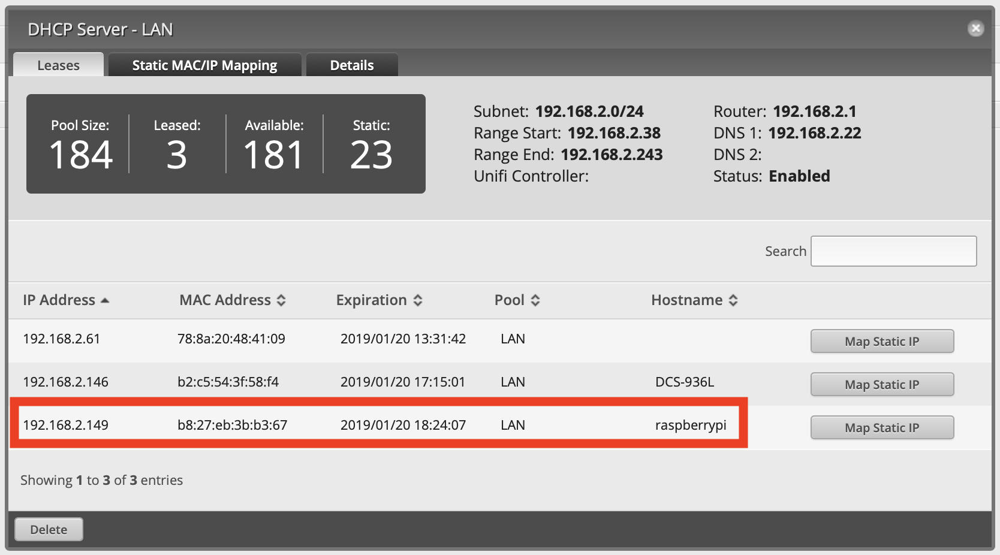
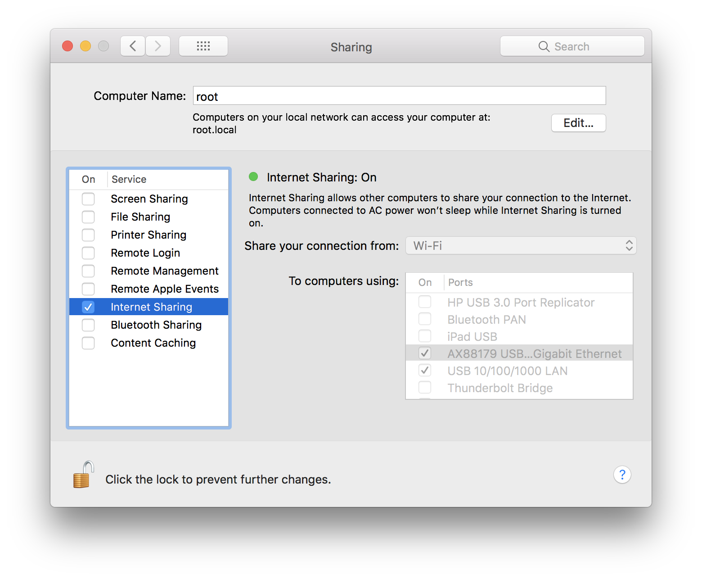
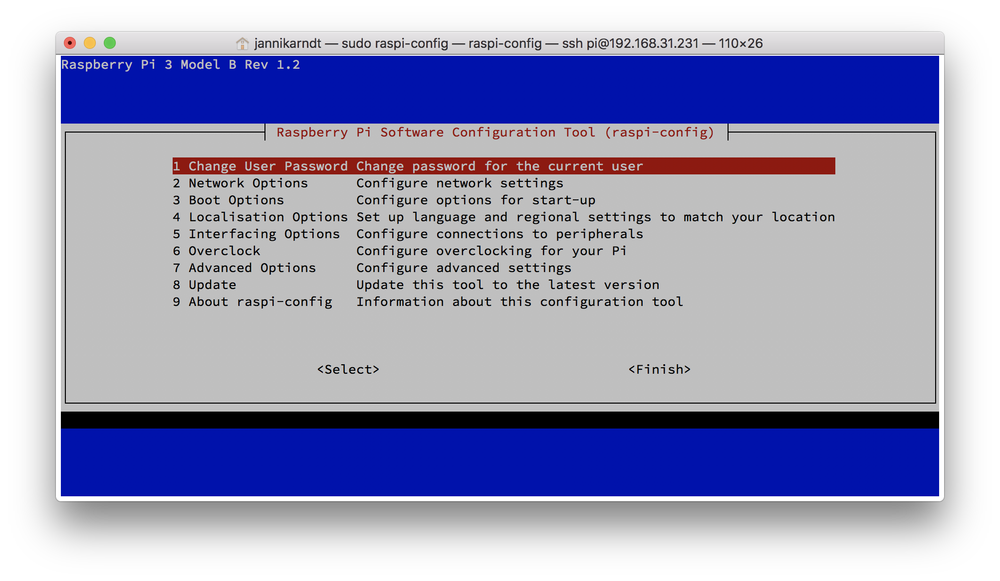

I bought a raspberry pi as a smart home automation server. Here’s how to set it up without connecting a monitor, mouse or keyboard. All you need is an ethernet cable.
1. Prepare the SD card
1. Download Raspbian
Here, -L means follow redirect, -C - let’s you resume the download.
$ curl https://downloads.raspberrypi.org/raspbian_lite_latest -L -C - -o raspbian-stretch-lite.zip
% Total % Received % Xferd Average Speed Time Time Time Current
Dload Upload Total Spent Left Speed
100 390 100 390 0 0 69 0 0:00:05 0:00:05 --:--:-- 89
100 399 100 399 0 0 70 0 0:00:05 0:00:05 --:--:-- 70
20 351M 20 72.6M 0 0 358k 0 0:16:44 0:03:27 0:13:17 364k
2. Unzip the Download
$ tar xzf raspbian-stretch-lite.zip
3. Check the Path of the SD Card
Here it is /dev/disk2:
$ diskutil list
/dev/disk0 (internal):
...
/dev/disk1 (synthesized):
...
/dev/disk2 (external, physical): <= that's the one
...
/dev/disk3 (disk image):
...
4. Unmount the SD Card
$ diskutil unmountDisk /dev/disk2
5. Copy the Data to the Card
We use /dev/rdisk2 because it’s a lot faster then /dev/disk2:
$ sudo dd bs=1m if=2018-11-13-raspbian-stretch-lite.img of=/dev/rdisk2 conv=sync
Password: ********
1780+0 records in
1780+0 records out
1866465280 bytes transferred in 33.915228 secs (55033252 bytes/sec)
6. Enable one-time SSH Access
$ touch /Volumes/boot/ssh
7. Eject the SD Card
$ diskutil eject /dev/disk2
2. Get Network Access to the Pi
Connected to your Router
You now have two options to connect to the pi via network: either you plug it into your router and look at the DHCP settings what IP address is assigned to it: 
Connected to your Mac
You can also connect it to your Mac directly. For that, you also need to enable Internet Sharing in System Settings > Sharing: 
3. Configure SSH access
This assumes that you have an ssh key. If not or you don’t know what that is: An ssh key consist of two files: A private and a public one. The private one (id_rsa) is on your computer and works like a password (so do not share it!). The public one (id_rsa.pub) is on other computers and identifies you. It only works together with your private key, so don’t loose it. Your public key is on your computer as well so you can easily share it.
You can find both keys with
$ ls -l ~/.ssh
total 120
-rw------- 1 jannikarndt staff 1766 Jan 3 2017 id_rsa
-rw-r--r--@ 1 jannikarndt staff 403 Jan 3 2017 id_rsa.pub
If you don’t have a key, GitHub has a great article on how to create one.
1. Copy your SSH Key to the Pi
$cat ~/.ssh/id_rsa.pub | ssh pi@192.168.2.149 "mkdir -p ~/.ssh && cat >> ~/.ssh/authorized_keys"
The authenticity of host '192.168.2.149 (192.168.2.149)' can't be established.
ECDSA key fingerprint is SHA256:TDaxHjcZfoPqgvY2Mq0RVvcakKlEsU9AntEzicUXl6U.
Are you sure you want to continue connecting (yes/no)? yes
Warning: Permanently added '192.168.2.149' (ECDSA) to the list of known hosts.
pi@192.168.2.149's password: raspberry
2. SSH into the Pi
$ ssh pi@192.168.2.2
Linux raspberrypi 4.14.79-v7+ #1159 SMP Sun Nov 4 17:50:20 GMT 2018 armv7l
The programs included with the Debian GNU/Linux system are free software;
the exact distribution terms for each program are described in the
individual files in /usr/share/doc/*/copyright.
Debian GNU/Linux comes with ABSOLUTELY NO WARRANTY, to the extent
permitted by applicable law.
SSH is enabled and the default password for the 'pi' user has not been changed.
This is a security risk - please login as the 'pi' user and type 'passwd' to set a new password.
Wi-Fi is disabled because the country is not set.
Use raspi-config to set the country before use.
The preconfigured password is raspberry. A good reason to change it right away:
3. Change your root Password:
sudo raspi-config

-
Add your wifi credentials in
2 Network Options>N2 Wi-fi -
Permanently enable ssh access in
5 Interfacing Options>P2 SSH.
4. Install oh-my-zsh
And now, for the grand finale, you can (should / will want to) install a proper shell, i.e. oh my zsh:
sudo apt-get update && sudo apt-get upgrade
sudo apt-get install git zsh
chsh -s /bin/zsh
sh -c "$(curl -fsSL https://raw.githubusercontent.com/robbyrussell/oh-my-zsh/master/tools/install.sh)"
5. Continue
Great! Now you can use your Pi, for example
- with Apple Home and Sonoff devices to control your smart home or
- as an alternative to Apples 329€ Time Capsule for Time Machine backups over wifi.